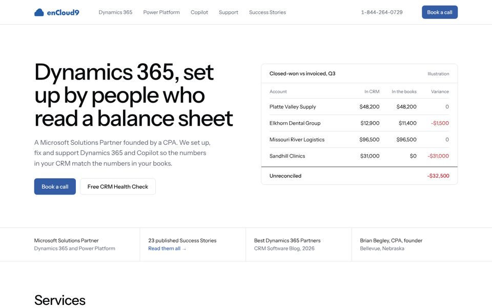

Look 1
Ledger
- Character
- exact, calm, numerate
- World
- ledgers, reconciliations, month-end
- Moment
- a reconciliation table in the hero; a ranked Health Check report
- Signature
- status dots that mean Fix now, Plan, Fine
- Type
- Instrument Sans with Instrument Sans